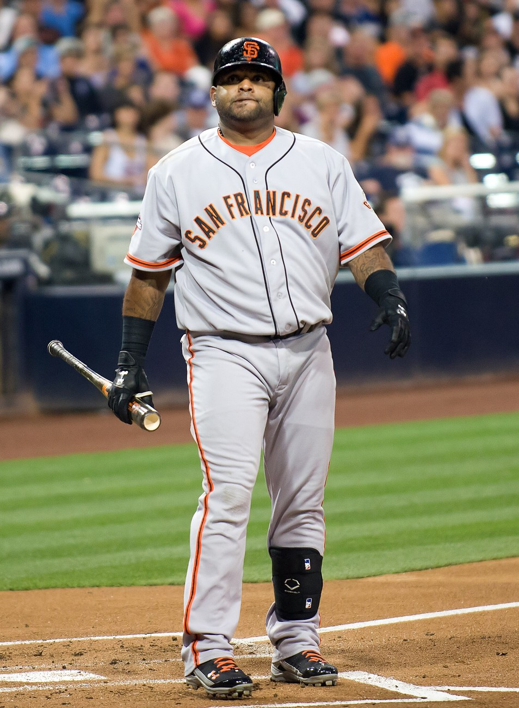
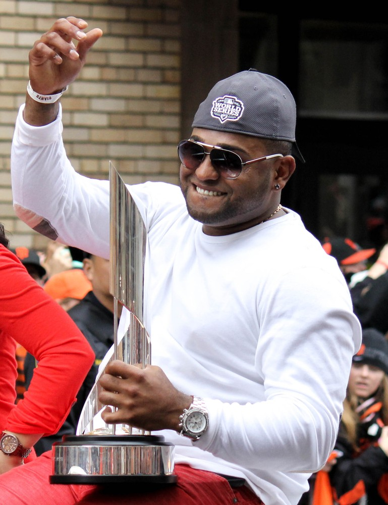
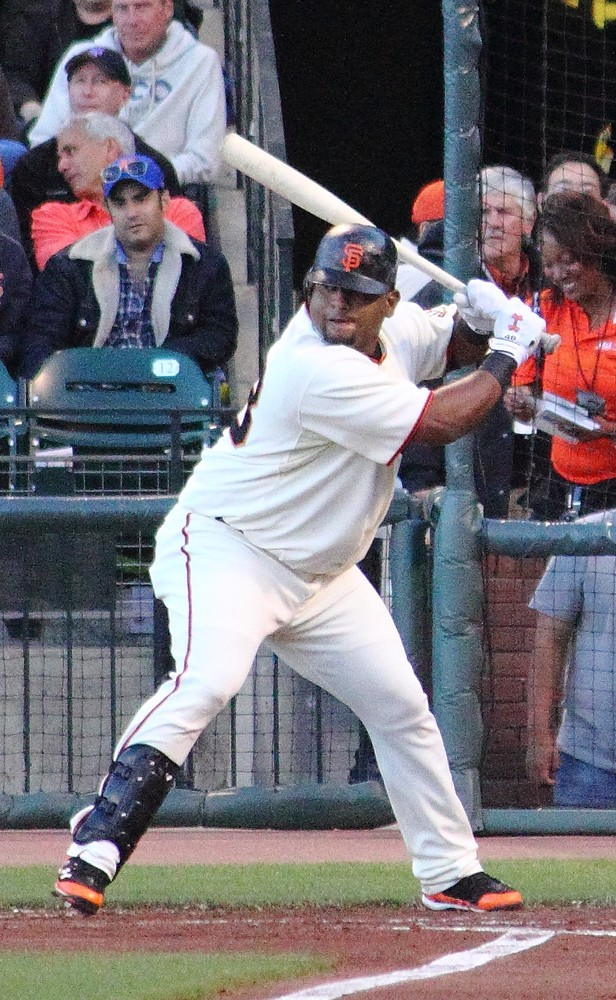
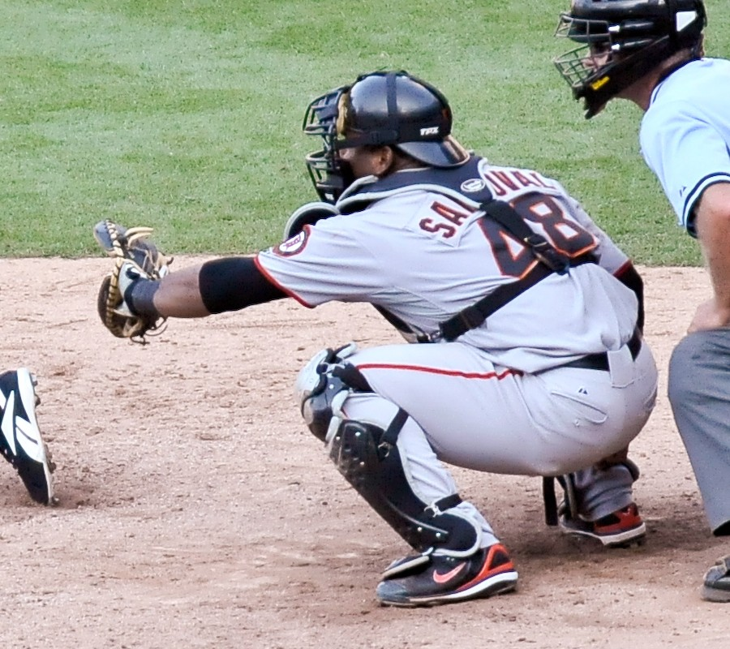

Pablo “Kung Fu Panda” Sandoval
Three homers in one World Series game, 26 hits in one October, and the foul pop that ended 2014 settling into his glove.
The Pablo Sandoval Story
Every great Giants team has a guy the whole city just adores, and for the even year run that guy was a round, switch hitting third baseman who swung at everything and somehow hit most of it. Pablo Sandoval had panda hats bouncing all over the ballpark, and in October he turned into one of the most dangerous hitters on the planet.
He was born August 11, 1986, in Puerto Cabello, Venezuela, and grew up idolizing Omar Vizquel and Andres Galarraga. He was born left handed, but he wanted to play shortstop like Vizquel, so at nine he taught himself to throw right handed. A Texas Rangers scout once promised to come sign him and never showed up. Two weeks later Ciro Villalobos of the Giants offered him a contract in 2002, and that was that.
He came up through the minors as a catcher, a first baseman and a third baseman, and in 2008 he hit .350 with 20 homers across San Jose and Connecticut. The Giants called him up in August and he hit .345 in 41 games. Barry Zito gave him the nickname Kung Fu Panda, after the movie, and that September he hurdled the tag of Dodgers catcher Danny Ardoin to score a run.
In 2009 he took over third base and hit .330, second in the National League, with 25 homers and 90 RBIs and 189 hits, a Giants record for a switch hitter. He finished seventh in the MVP vote. On July 30, the 50th anniversary of Willie McCovey's debut, with McCovey in the ballpark, Pablo hit his first homer into McCovey Cove. His approach, by his own description, was "See ball, swing."
Then the slump. He hit .268 in 2010, his weight became a running story, and in October he lost his job at third to Juan Uribe, getting only three at bats in the World Series. He got his ring anyway, and that winter the Giants launched what everybody called Operation Panda. He dropped more than 30 pounds and came back in 2011 hitting .315 with 23 homers, made his first All Star team, doubled in a run in the game, and hit for the cycle at Coors Field in September.
In 2012 he opened the year with a 20 game hitting streak, a franchise record to start a season, broke the hamate bone in his other wrist, and still got voted in as the NL's starting third baseman for the All Star Game. In Kansas City he hit a bases loaded triple off Justin Verlander, the first in All Star Game history. Three months later he did a lot worse to Verlander.
Game 1 of the 2012 World Series: three homers in his first three trips to the plate, two off Verlander. Only Babe Ruth, Reggie Jackson and Albert Pujols had ever hit three in a Series game. He hit .500 in the sweep of Detroit and was named World Series MVP, won the Babe Ruth Award for the postseason, and set a Giants record with 24 postseason hits. A few months later he led Magallanes to its first Venezuelan title since 2002 and was MVP of that postseason too.
He hit three homers in a regular season game against the Padres in September 2013, joining a short list of players with three homer games in both the regular season and the postseason. In 2014 he played 157 games, and in October he was everywhere: a ninth inning double to tie Game 2 of the NLDS in Washington, which the Giants won in 18 innings, a National League record postseason hitting streak, a two run single to break a tie in Game 4 of the World Series while fighting the flu, and 26 hits in all, a single postseason record at the time. He caught the final out of Game 7.
Then he left. Boston gave him five years and $90 million, and it went badly from the start. He hit .245 in 2015, hurt his shoulder in 2016, and the Red Sox released him in July 2017. The Giants brought him right back, first on a minor league deal, and he turned into a beloved bench piece. He pitched a perfect ninth inning against the Dodgers in 2018, led the majors with 18 pinch hits in 2019, and came off the injured list two days before Tommy John surgery to make one last appearance for Bruce Bochy.
The Giants released him in September 2020, and he finished his big league career with Atlanta, which gave him a fourth ring after the Braves won the 2021 World Series. He kept playing for years after that, in Mexico, in independent ball with the Staten Island FerryHawks, and in winter ball back home. He was a guest instructor at Giants camp in the spring of 2026, and on August 8, 2026, his plaque went up on the Wall of Fame next to Buster Posey's.
What He Meant to Us
Pablo was pure joy. You'd see him hack at a pitch over his head and pull it into the gap, and the whole ballpark would just laugh and cheer at the same time. Half the people in the stands had panda hats on. Nobody else in baseball looked like him or played like him.
October 24, 2012 is the night I think of first. Verlander was supposed to be the guy who swung that Series, and Pablo took him deep twice before the fourth inning. After the third homer I remember thinking, okay, we're winning this thing. Four games later we had.
Then 2014 happened and he was even better, just quieter about it. Twenty six hits. The Game 2 double in Washington when we were down to our last out. And the final out of Game 7 coming down right into his glove. I'll never get tired of that clip.
The Boston thing stung, I won't lie. Watching him leave for that contract and then struggle the way he did was hard. But he came back, he played for the minimum, he pitched a perfect inning against the Dodgers, and he ended up on the Wall of Fame with Buster. Panda's ours. He always was.
In Pictures



Why He Was Clutch
Regular season Pablo was a good hitter. October Pablo was a different animal. In 42 postseason games he hit .338 with 53 hits, and with the Giants he did even better. In 2012 he hit .364 that postseason with six homers and a Giants record 24 hits. In 2014 he collected 26 more, the most anyone had ever had in one October.
The three homer night against Detroit is the headline, and it should be. The first one came on a high 95 mile an hour pitch on an 0 and 2 count from Justin Verlander, the best pitcher in baseball at the time, the second came on the very next pitch after a mound visit, and the third came off Al Alburquerque. Nobody had ever homered in his first three Series plate appearances of a game like that.
But I love the 2014 stuff just as much. The ninth inning double off Drew Storen to tie a game the Giants had to have in Washington. The go ahead single with the flu in Game 4. And then the last thing that happened in that whole Series, Salvador Perez's pop up drifting into foul ground and down into Pablo's glove.
Clutch Moments
- July 30, 2009
Splash, with McCovey watching
On the 50th anniversary of Willie McCovey's big league debut, with McCovey at the ballpark, Sandoval hit his first homer into McCovey Cove. "It's special right now. I hit McCovey Cove and McCovey's here," he said afterward.
- September 15, 2011
Hitting for the cycle at Coors
Against Jhoulys Chacin in Denver, Sandoval hit a two run homer in the first, singled in the second, doubled in the fifth and tripled in the sixth. The triple, for a guy built like Pablo, is still one of the funniest things I've ever seen on a baseball field.
- July 10, 2012
Bases loaded triple off Verlander
Voted in as the NL's starting third baseman, Sandoval came up in a five run first inning at Kauffman Stadium and hit a bases loaded triple off reigning AL Cy Young winner Justin Verlander. It was the first bases loaded triple in All Star Game history. Remember that name.
- October 24, 2012
Three homers in Game 1
World Series Game 1 at AT&T Park. In the first, on a high 95 mile an hour pitch from Verlander with an 0 and 2 count, Sandoval homered just over the wall in right center. In the third, on the very next pitch after a mound visit, he hit a two run shot the other way to left. In the fifth he homered to center off Al Alburquerque.
He joined Babe Ruth, Reggie Jackson and Albert Pujols as the only players to hit three home runs in a World Series game, and the first to do it in his first three plate appearances. He added a single in the seventh, went 4 for 4, and the Giants won 8 to 3 on the way to a sweep.
- October 4, 2014
Tying double in the ninth in Washington
Game 2 of the NLDS, Giants down 1 to 0 with two outs in the ninth at Nationals Park. Sandoval doubled to left off Drew Storen to score Joe Panik and tie it, with Buster Posey thrown out at the plate on the same play. The game went 18 innings before Brandon Belt homered to win it 2 to 1.
- October 25, 2014
Flu, tie game, two run single
Game 4 of the World Series, tied 4 to 4 in the sixth at AT&T Park. Sandoval, sick with the flu, lined a two run single to center to put the Giants ahead for good in an 11 to 4 win that evened the Series at two games each.
- October 29, 2014
The last out of 2014
Game 7 in Kansas City. Sandoval had three hits, including his 26th of the postseason, a record at the time, and he scored twice. In the bottom of the ninth, with the tying run on third, Salvador Perez popped Madison Bumgarner's pitch up in foul ground by third. Pablo settled under it and squeezed it. Third title in five years.
The Highlights
What They Said About Sandoval
“It's special right now. I hit McCovey Cove and McCovey's here. He talks to me every time he's in the clubhouse.”
“Man, I still can't believe it.”
“I tried to elevate there and didn't get it high enough and obviously didn't quite know he was that locked in at that point. He was seeing the ball pretty well today.”
“I spent more time with these guys than my family.”
“I remember giving me a big hug because he didn't have to catch anymore.”
Career Stats
| Year | Team | G | AB | R | H | 2B | 3B | HR | RBI | SB | BB | AVG | OBP | SLG | OPS |
|---|---|---|---|---|---|---|---|---|---|---|---|---|---|---|---|
| 2008 | SF | 41 | 145 | 24 | 50 | 10 | 1 | 3 | 24 | 0 | 4 | .345 | .357 | .490 | .847 |
| 2009 | SF | 153 | 572 | 79 | 189 | 44 | 5 | 25 | 90 | 5 | 52 | .330 | .387 | .556 | .943 |
| 2010 | SF | 152 | 563 | 61 | 151 | 34 | 3 | 13 | 63 | 3 | 47 | .268 | .323 | .409 | .732 |
| 2011 | SF | 117 | 426 | 55 | 134 | 26 | 3 | 23 | 70 | 2 | 32 | .315 | .357 | .552 | .909 |
| 2012 | SF | 108 | 396 | 59 | 112 | 25 | 2 | 12 | 63 | 1 | 38 | .283 | .342 | .447 | .789 |
| 2013 | SF | 141 | 525 | 52 | 146 | 27 | 2 | 14 | 79 | 0 | 47 | .278 | .341 | .417 | .758 |
| 2014 | SF | 157 | 588 | 68 | 164 | 26 | 3 | 16 | 73 | 0 | 39 | .279 | .324 | .415 | .739 |
| 2015 | BOS | 126 | 470 | 43 | 115 | 25 | 1 | 10 | 47 | 0 | 25 | .245 | .292 | .366 | .658 |
| 2016 | BOS | 3 | 6 | 0 | 0 | 0 | 0 | 0 | 0 | 0 | 1 | .000 | .143 | .000 | .143 |
| 2017 | BOS | 32 | 99 | 10 | 21 | 2 | 0 | 4 | 12 | 0 | 8 | .212 | .269 | .354 | .623 |
| 2017 | SF | 47 | 160 | 17 | 36 | 9 | 0 | 5 | 20 | 0 | 8 | .225 | .263 | .375 | .638 |
| 2018 | SF | 92 | 230 | 22 | 57 | 10 | 1 | 9 | 40 | 0 | 19 | .248 | .310 | .417 | .727 |
| 2019 | SF | 108 | 272 | 42 | 73 | 23 | 0 | 14 | 41 | 1 | 18 | .268 | .313 | .507 | .820 |
| 2020 | SF | 33 | 82 | 5 | 18 | 1 | 0 | 1 | 6 | 0 | 6 | .220 | .278 | .268 | .546 |
| 2020 | ATL | 1 | 2 | 0 | 0 | 0 | 0 | 0 | 0 | 0 | 2 | .000 | .500 | .000 | .500 |
| 2021 | ATL | 69 | 73 | 11 | 13 | 0 | 0 | 4 | 11 | 0 | 11 | .178 | .302 | .342 | .644 |
| Career | 1380 | 4609 | 548 | 1279 | 262 | 21 | 153 | 639 | 12 | 357 | .278 | .330 | .443 | .773 |
Giants 2008 to 2014 and 2017 to 2020, Boston 2015 to 2017, Atlanta 2020 to 2021. Postseason lines built from his game logs. Scroll the table sideways on a phone.
Postseason
| Year | Team | Series | Opp | G | AB | R | H | 2B | 3B | HR | RBI | BB | AVG |
|---|---|---|---|---|---|---|---|---|---|---|---|---|---|
| 2010 | SF | NLDS | ATL | 2 | 6 | 0 | 1 | 0 | 0 | 0 | 0 | 1 | .167 |
| 2010 | SF | NLCS | PHI | 3 | 8 | 0 | 2 | 1 | 0 | 0 | 2 | 1 | .250 |
| 2010 | SF | WS | TEX | 1 | 3 | 0 | 0 | 0 | 0 | 0 | 0 | 0 | .000 |
| 2012 | SF | NLDS | CIN | 5 | 21 | 2 | 7 | 2 | 0 | 1 | 3 | 0 | .333 |
| 2012 | SF | NLCS | STL | 7 | 29 | 4 | 9 | 2 | 0 | 2 | 6 | 2 | .310 |
| 2012 | SF | WS | DET | 4 | 16 | 3 | 8 | 1 | 0 | 3 | 4 | 1 | .500 |
| 2014 | SF | WC | PIT | 1 | 4 | 2 | 2 | 0 | 0 | 0 | 0 | 1 | .500 |
| 2014 | SF | NLDS | WSH | 4 | 19 | 1 | 4 | 1 | 0 | 0 | 1 | 1 | .211 |
| 2014 | SF | NLCS | STL | 5 | 20 | 3 | 8 | 3 | 0 | 0 | 0 | 2 | .400 |
| 2014 | SF | WS | KC | 7 | 28 | 6 | 12 | 3 | 0 | 0 | 4 | 1 | .429 |
| 2020 | ATL | NLCS | LAD | 3 | 3 | 0 | 0 | 0 | 0 | 0 | 0 | 0 | .000 |
| Career | 42 | 157 | 21 | 53 | 13 | 0 | 6 | 20 | 10 | .338 |